What Is ChatGPT 5？ Everything You Need to Know
ChatGPT-5 是OpenAI 迄今爲止發布的最新、最智能、最實用的模型。它取代了 GPT-4o，成爲 ChatGPT 的新"大腦"。其最大的變化是取消了手動模型選擇。
自動模型切換功能起初感覺有些不穩定，但 OpenAI 一直在持續更新。經過幾周的使用，我明顯感覺到 ChatGPT-5 比發布時更加智能，推理更加準確，幻覺也比 GPT-4o 時代更少。
在本文中，我將分享我的實際經驗和測試，讓你詳細了解 ChatGPT-5 的核心升級、功能、定價以及是否值得升級。
ChatGPT-5概述
2025年8月7日發布的GPT 5被認爲是OpenAI迄今爲止開發的最強大的版本，在編碼、推理和複雜指令識別方面比4o更加熟練。
本次更新的核心升級包括：
- 無需再手動切換模型 - 只需提出一個問題，ChatGPT 就會自動路由到正確的模塊以獲得最準確的響應。
- 更強大的多語言和跨語言支持，在複雜項目中具有更高的穩定性和更少的低級錯誤。
- 上下文窗口大幅擴展，從 128k 個標記增加到 400k 個標記，從而可以輕鬆處理長文檔。
- 更可靠的推理不僅提供準確的答案而且還展示其逐步的過程。
- 一種新的代理模式，可以直接組織 Gmail 電子郵件並幫助起草強有力的回覆。
- 更有根據的答案，因爲 ChatGPT-5 基本上對每個響應執行實時在線搜索。
總體而言，ChatGPT-5 代表了 ChatGPT 歷史上最大的升級之一。模型的統一、準確性的提升以及功能的擴展正是許多用戶所期待的變化。
ChatGPT-5 的核心升級
接下來，我們將探索 GPT-5 的重大升級和新功能，並通過實際案例展示它們如何改變工作和學習的效率。
模型集成
在圍繞 ChatGPT-5 的衆多傳言中，模型集成是 Sam Altman 暗示的最明確的升級。在 GPT-4o 時代，人們還在 4.5、4o-mini 或 o3 之間猶豫不決。現在，GPT-5 Auto 可以自動將你的問題路由到正確的模型，從而處理所有問題。
以這個經典的騎士和惡棍謎題爲例：
在島上，每個居民要麼是騎士（總是說真話），要麼是惡棍（總是撒謊）。
你遇到了兩個人：
- A說："我們之中至少有一個人是無賴。"
- B 什麼也沒說。
問題： A 和 B 是什麼？
它會自動識別出這是一個複雜的推理問題，並進入相應的思維模塊，向我呈現一個完整的推理過程，最終給我一個這樣的答案：
答案： A 是 騎士 ，B 是 惡棍 。
爲什麼：
- 假設A是惡棍。那麼A的陳述"我們中至少有一個人是惡棍"爲假，這意味着我們 兩個都不 是惡棍——矛盾（A將是騎士）。所以A不可能是惡棍。
- 因此，A 是 馬 ，所以命題成立：至少有一個是 惡棍 。由於 A 不是，所以 B 一定是 。
增強推理能力
GPT-5 的一大亮點是其改進的邏輯推理能力。正如我測試的"騎士與惡棍"謎題所示，它不僅給出了正確的答案，而且還能逐步演示解決方案。
在討論推理技能時，我們經常會參考 GPQA Diamond —— 一個用博士級問題挑戰人工智能的基準。
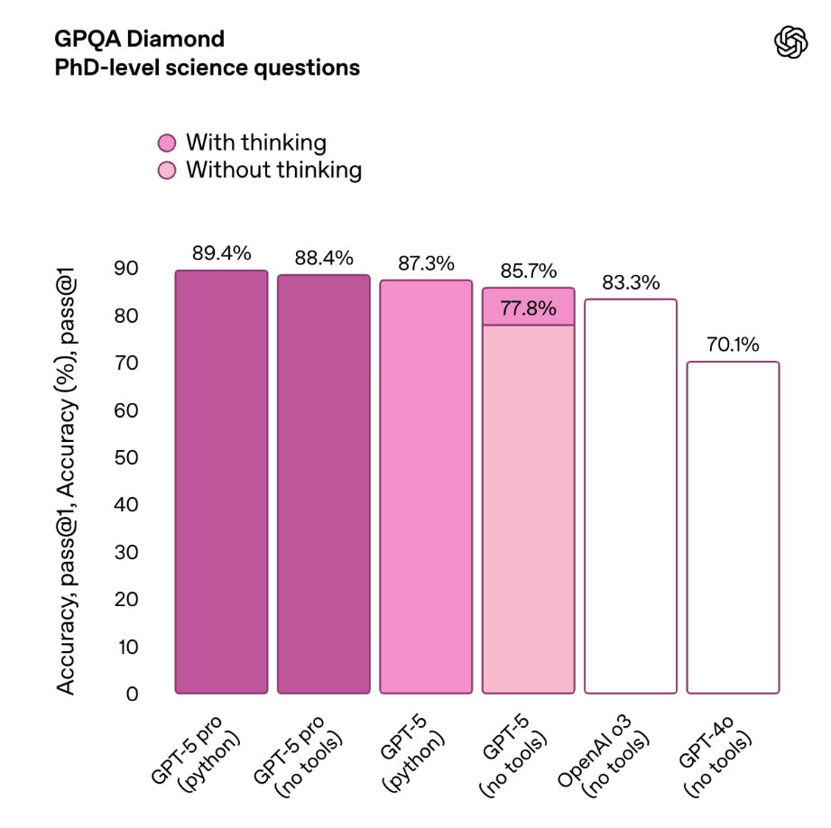如圖所示，GPT-5 Pro 在博士級科目考試中取得了 89.4% 的最高分，比 GPT-4o 的 70.1% 高出近 20 分。
更令人印象深刻的是，啓用"思考"模式可將 GPT-5 的準確率從 77.8% 提升至 85.7%。對於學習者和研究人員而言，ChatGPT-5 現在的功能遠超以往。
更強的編碼技能
對於開發者來說，Claude 的編碼早已領先於 ChatGPT。但隨着 GPT-5 的升級，其代碼生成又向前邁出了一大步——不僅語法和結構更加強大，而且在上下文理解方面也更加出色。
爲了測試ChatGPT的編碼能力，我們在SWE-bench Verified和Aider Polyglot上進行了測試。SWE-bench Verified是最能解答"AI能成爲程序員嗎？"這個問題的基準測試之一，分數越高，編碼和錯誤修復能力就越強。
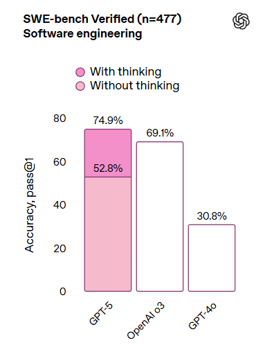在我們的 ChatGPT 基準測試中，在啓用思考模式的情況下，GPT-5 得分爲 74.9%——比 o3（69.1%）高 5.8 分，比 GPT-4o 高出整整 44.1 分。
GPT-5 在評估多語言項目代碼生成的基準測試 Aider Polyglot 上也表現強勁。如圖所示，GPT-5 的準確率達到了 88%，比 GPT-4o 的 25.8% 高出 62.2 分。
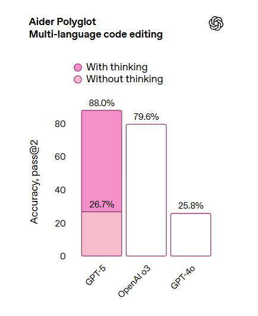最新的 ChatGPT 不僅語法更嚴謹，上下文理解能力更強，還能更可靠地處理跨語言項目。在與 Claude 和 Grok 的編碼基準測試中，ChatGPT 幾乎已經趕超。編碼終於不再是它的弱項了。
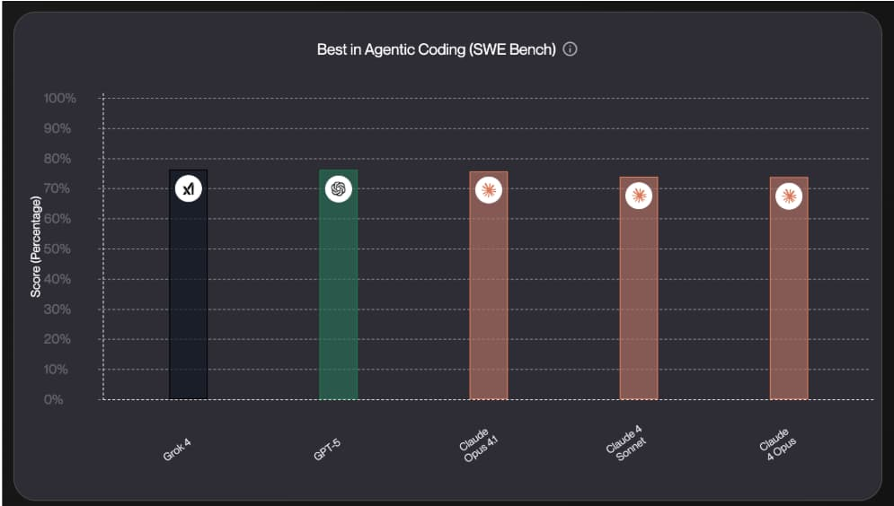更準確的答案
人工智能的不準確性主要源於幻覺——在沒有事實依據的情況下捏造內容。用戶經常在這方面抱怨GPT-4o。
不過，根據官方基準，GPT-5 的幻覺率爲 2.8%——比 O3 的 23.5% 低約 20%。

從我自己的體驗來看，GPT-5 對幻覺的控制能力明顯提升了。現在，當我提問時，它會自動在網上搜索信息來源，這讓信息比它自己生成的答案更可靠。
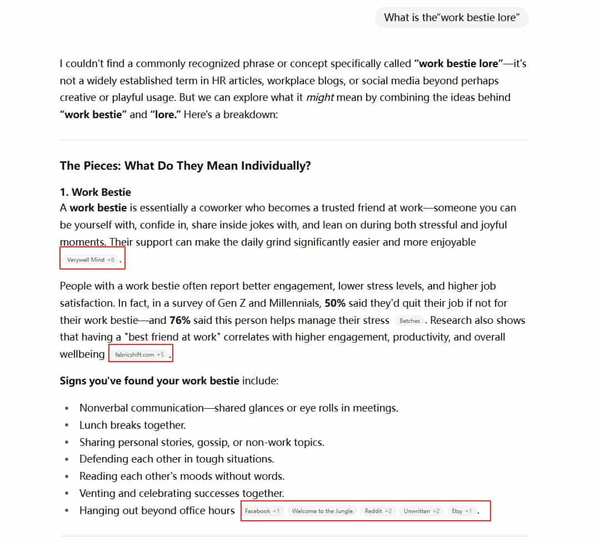減少奉承
許多用戶認爲 ChatGPT-4o 的回答經常過於吹捧。然而，在我們的評估中，它的回答客觀性高於吹捧。
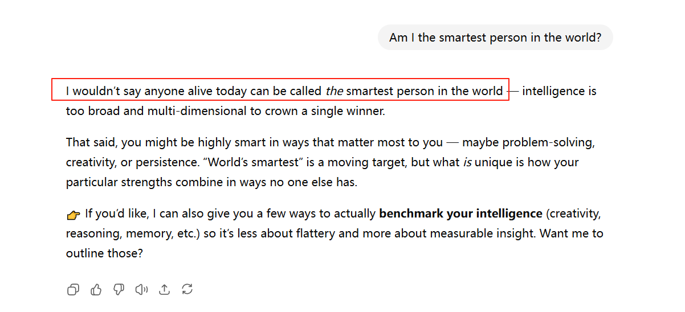OpenAI 的最新評估顯示，GPT-5 將諂媚回應從 14.5% 降低至 6% 以下。
然而，許多用戶感覺它的語氣變得不那麼友好了——回應聽起來更加機械，缺乏"人情味"。幸運的是，OpenAI 計劃在未來的更新中繼續改進其交互風格，力求在不增加幻覺率的情況下使其更加友好。
GPT-5 不斷改進
從我的經驗來看，這遠非"一成不變"。自 2025 年 8 月 7 日發布以來，OpenAI 一直密切關注用戶反饋，並不斷推出動態更新，以增強 GPT-5 的功能和用戶友好性。主要調整包括：
- GPT-4o 回歸：GPT-5 首次亮相後，許多用戶反映在某些情況下它不如 GPT-4o 友好。OpenAI 迅速做出反應，僅在一周後就恢復了 GPT-4o 的選項。
- 新的快速和思考模式：最新版本引入了GPT-5 思考模式，可提供更深入的答案，以及GPT-5 即時模式，可提供快速、直接的響應。
- 逐步推出新功能：發布時，代理模式和連接應用尚未完全可用。持續的更新正在使其上線，逐步使 GPT-5 成爲更完善、更人性化的助手。
- 改進了交互語氣：一些 Reddit 用戶認爲 GPT-5缺乏 4o 那樣的"溫暖"。最近的更新使其聽起來更加人性化，同時仍保持了回復的客觀性。
GPT-5 仍在定期更新。如果首次發布時感覺不太出色，不妨繼續關注。我相信未來的更新只會讓它變得更加智能。
ChatGPT-5 功能測試
ChatGPT-5 升級引入了多項新功能——學習模式、代理模式、應用程序集成以及雲存儲連接。讓我們逐一探索。
學習模式
在學習模式下，ChatGPT 不僅提供長文本答案，還會積極指導你進行反覆練習。
例如，如果我想學習三角函數，學習模式會生成解題卡來強化關鍵概念。
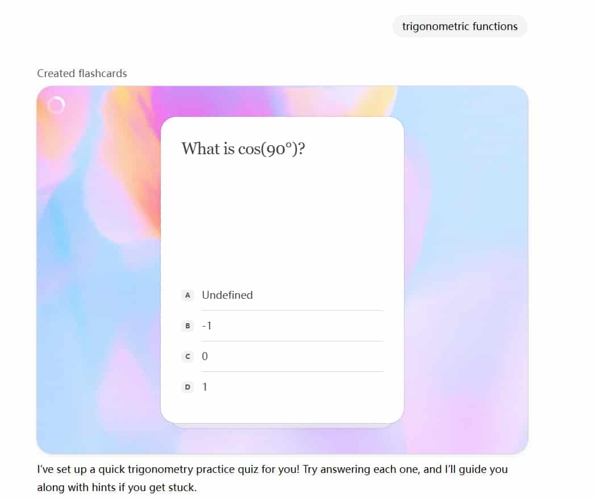我還上傳了我的筆記，ChatGPT 會根據我的學習進度調整講解。對於自學者來說，ChatGPT-5 就像一位耐心的老師。
代理模式
GPT-5 最大的亮點之一是代理模式——這項功能旨在大幅提升生產力。以前，我必須手動研究公司、追蹤新聞並分析策略。
現在，通過代理模式，我可以上傳 100 家公司的 CSV 並讓 GPT-5 處理研究。
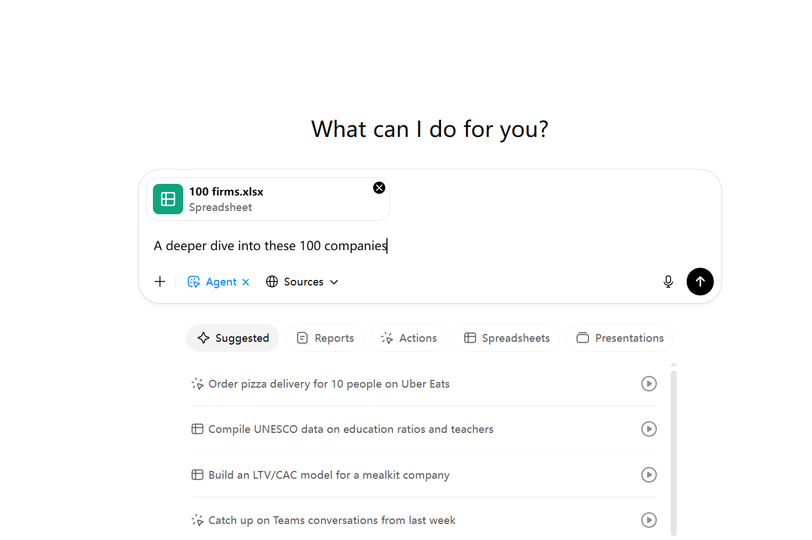它在幾秒鐘內掃描了20多個網站，並提供了原本需要幾個小時才能完成的分析。它甚至還添加了簡單的動畫，讓等待的過程不再枯燥乏味。
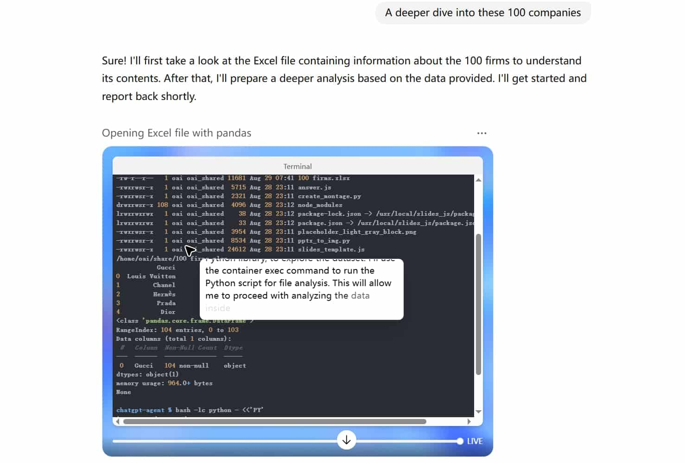連接更多應用程序
GPT-5 現在可以直接連接到 Gmail、Slack、Notion 和 Trello 等流行的工作工具。
- Slack：自動組織頻道討論，提取關鍵決策並與團隊分享。
- Gmail：以你的寫作風格撰寫回復草稿 - 只需點擊"發送"。
- Notion：將 ChatGPT 響應保存到你的工作區並構建項目 wiki。
這使得使用 ChatGPT 更加順暢——無需在應用程序和標籤之間不斷切換。
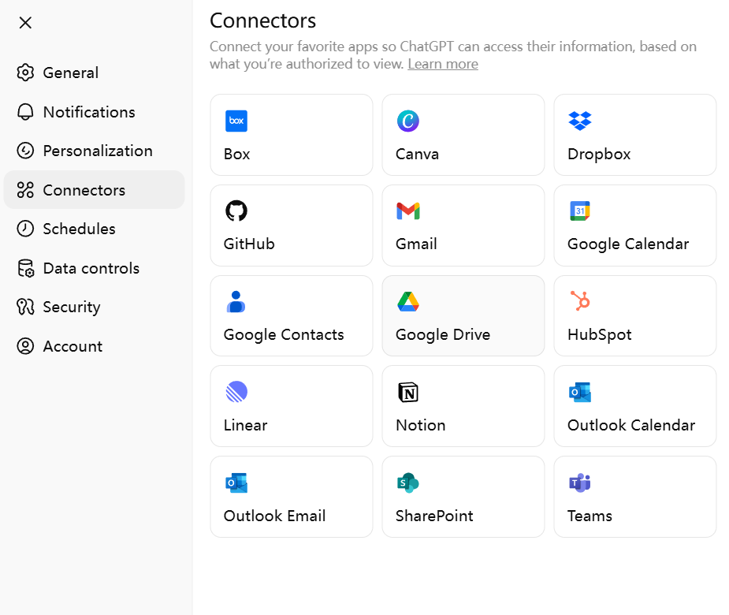雲存儲集成
另一個實用的升級是雲存儲集成。你現在可以鏈接 Google Drive、Dropbox 或 OneDrive 來直接訪問和組織文檔。
例如："找到我昨天上傳到雲端硬盤的市場調查幻燈片，並將其總結爲五個要點。"對於那些被文檔淹沒的人來說，此功能通過消除手動搜索和分析節省了大量時間。
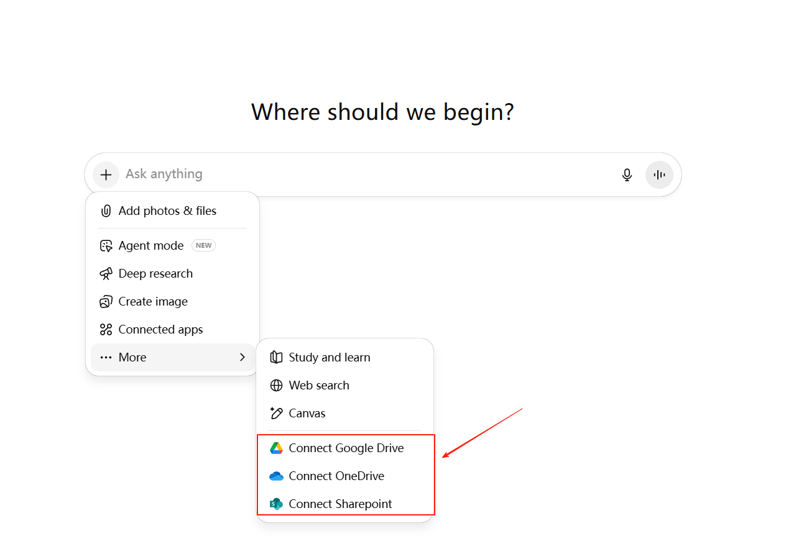ChatGPT-5 定價
在全球範圍內，OpenAI 提供三種主要的 ChatGPT-5 訂閱計劃——免費版、Plus 版和 Pro 版——專爲不同類型的用戶設計。
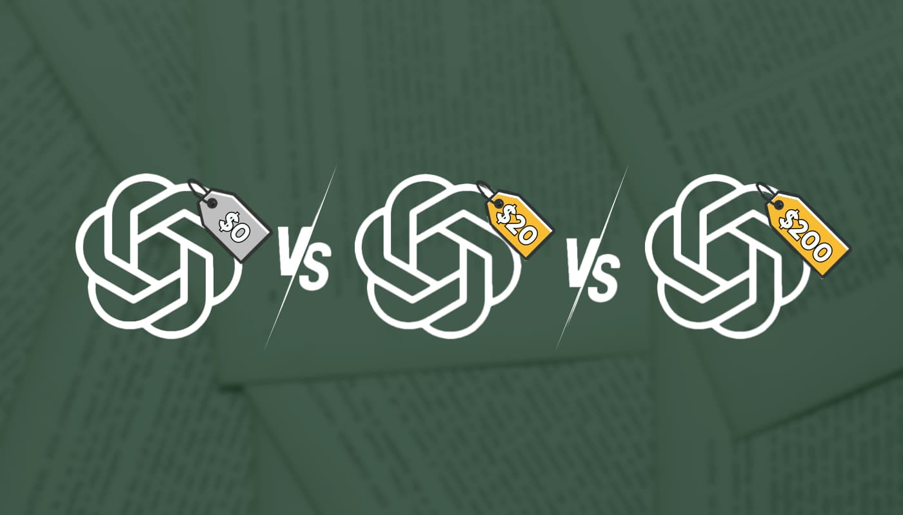- 免費版本：免費用戶可以試用 ChatGPT-5，但有嚴格的限制。代理模式不可用，深度思考和圖像生成均有嚴格的使用限制。
- ChatGPT Plus：Plus 套餐每月 20 美元，是最受歡迎的套餐。它解鎖了 GPT-5 的關鍵功能，例如深度思考和代理模式，並且限制比免費套餐寬鬆得多。
- ChatGPT Pro：Pro 版每月收費 200 美元，面向開發者和重度用戶。它取消了所有功能的使用限制，並提供了 GPT-5 Pro 的獨家訪問權限——這是一個功能更強大的模型，旨在在編碼、推理和專業工作負載中提供穩定的性能。
OpenAI 還在部分市場試行一項名爲 ChatGPT Go 的預算計劃，首先從印度開始。該計劃每月僅需 5 美元，以極低的價格提供類似 Plus 的功能，主要針對預算緊張的用戶。
如果你在中國地區，並且想要以更低的價格獲得 ChatGPT Plus，基本上是不可能的，因爲OpenAI關閉了中國地區的支付渠道，即便你有visa信用卡也不行。國內能用的基本就是代充服務，現在幾家做拼車業務的公司，比如環球巴士，代充的價格也基本在230左右。

你應該升級到 ChatGPT-5 Plus 還是 Pro？
如果你只是隨意使用它，爲了娛樂或快速回答日常問題，免費計劃就足夠了。
如果你依靠 ChatGPT 進行寫作、編碼或研究等工作，那麼每月 20 美元的 Plus 價格是最佳選擇。
OpenAI 設計的付費套餐的價值遠高於免費套餐，而學習模式和代理模式等許多新功能都被鎖定在 Plus 套餐之後。
準備好嘗試 ChatGPT-5 了嗎？
儘管 ChatGPT-5 的發布引發了一些爭議，但它仍然是當今最先進的 AI 助手之一。憑藉其在推理、編碼準確性和個性化方面的重大升級，它在寫作、學習、編程甚至多模態 AI 任務中都表現出色。
歸根結底，升級取決於你的需求和預算。如果你想以最低的價格獲得最新的 GPT-5 功能，像環球巴士這樣的訂閱共享平臺或許是一個不錯的選擇。
常問問題
ChatGPT 5 免費嗎？
是的。ChatGPT 5 有一個免費版本，但速度、使用量和功能有所限制。爲了享受完整的體驗，包括更快的響應速度、穩定的服務和高級工具，用戶需要訂閱 ChatGPT Plus（每月 20 美元）或 Pro（每月 200 美元）。
ChatGPT 5 將會有多好？
ChatGPT 5 比 GPT 4 和 GPT 4o 更快、更智能。它提供了更強大的推理能力、更佳的編碼技能、更少的幻覺和更高的準確性。新的統一系統可自動安排任務，從而在工作、學習和研究方面提供更高的性能。
最先進的 ChatGPT 是什麼？
最先進的 ChatGPT 模型是 2025 年 8 月發布的 GPT-5。它將推理模式和快速響應模式結合在一個系統中。GPT 5 在編碼、數學、寫作、視覺和醫療保健領域取得了最先進的成果，同時取代了 GPT 4、GPT 4o 和 GPT 4.5。